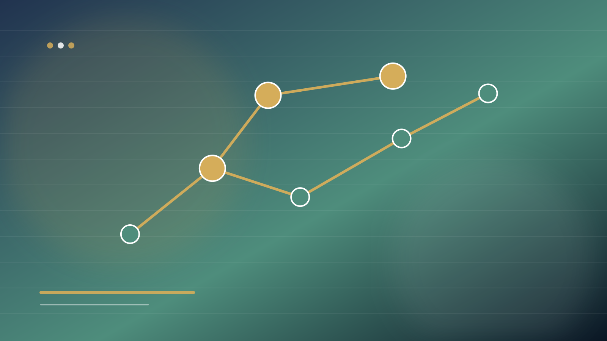

علاقه تحصیلی · رشد و تجربه
چگونه علاقه تحصیلی واقعی را از علاقه موقت تشخیص دهیم؟
علاقه یک ویژگی صفر و یک نیست. ممکن است با یک معلم، ویدئو، موفقیت کوتاه یا تصویر جذاب از یک شغل آغاز شود و سپس عمیقتر شود؛ یا با اولین مواجهه واقعی کاهش یابد. بنابراین سؤال دقیقتر از «واقعی یا موقت؟» این است که علاقه در چه مرحلهای از رشد قرار دارد و چه شواهدی از پایداری آن داریم.

چهار مرحله رشد علاقه
Hidi و Renninger در مدل چهارمرحلهای خود میان علاقه موقعیتی برانگیختهشده، علاقه موقعیتی حفظشده، علاقه فردی نوظهور و علاقه فردی توسعهیافته تمایز میگذارند. این مدل یادآوری میکند که علاقه میتواند ساخته و عمیق شود؛ بنابراین علاقه کم در آغاز لزوماً به معنای نامناسببودن حوزه نیست و علاقه شدید اولیه نیز لزوماً پایدار نمیماند.
پنج نشانه علاقه عمیقتر
بازگشت داوطلبانه
فرد بدون اجبار دوباره به موضوع برمیگردد.
جستوجوی دانش بیشتر
کنجکاوی با افزایش اطلاعات خاموش نمیشود.
تحمل دشواری
با اولین چالش، کل علاقه فرو نمیریزد.
تجربه واقعی
علاقه فقط به نام رشته نیست؛ به فعالیتهای واقعی آن نیز مربوط است.
تداوم زمانی
در چند ماه و چند تجربه مختلف قابل مشاهده است.
علاقهای که فقط به تصویر اجتماعی رشته وابسته است
گاهی فرد به «عنوان» یک رشته علاقه دارد، اما هنوز فعالیتهای واقعی آن را نمیشناسد. پزشکی، معماری، روانشناسی یا برنامهنویسی ممکن است در ذهن نوجوان با تصویرهایی همراه باشند که فقط بخشی از واقعیت را نشان میدهند. آشنایی با برنامه درسی، وظایف حرفهای، دشواریها و سبک کار میتواند علاقه را دقیقتر کند.
چگونه علاقه را آزمایش کنیم؟
یک آزمون کوچک طراحی کنید: مطالعه یک منبع مقدماتی، انجام پروژه کوتاه، شرکت در کارگاه، گفتوگو با دانشجو یا شاغل حوزه و نوشتن یک گزارش شخصی از تجربه. سپس سه سؤال بپرسید: چه چیزی برایم جذاب بود؟ چه چیزی دشوار یا ناخوشایند بود؟ آیا با دانستن این دشواریها هنوز میخواهم بیشتر یاد بگیرم؟
علاقه هم به حمایت محیط نیاز دارد
پژوهشهای جدیدتر درباره مدل رشد علاقه نشان میدهند تفاوتهای فردی و بافت اجتماعی در آنچه علاقه را برمیانگیزد و حفظ میکند نقش دارند. بنابراین خانواده و مدرسه میتوانند با فراهمکردن فرصت، منبع، بازخورد و ارتباط با افراد متخصص به علاقه فرصت بلوغ بدهند.
پرسشهای رایج
اگر علاقهام مرتب تغییر میکند، یعنی هنوز آماده انتخاب رشته نیستم؟
تغییر علاقه در نوجوانی غیرعادی نیست. بهتر است به جای نگرانی، تجربههای مقایسهپذیر ایجاد کنید و الگوهای تکرارشونده را ثبت کنید.
علاقه قوی به یک رشته برای انتخاب آن کافی است؟
علاقه مهم است اما باید در کنار شناخت رشته، شواهد توان، شرایط واقعی و فرصتهای آینده قرار گیرد.
منابع و پشتوانه علمی
مدل کلاسیک رشد علاقه: Hidi & Renninger (2006). بازنگری جدید درباره تفاوتهای فردی و زمینه فرهنگی در رشد علاقه: Hidi & Renninger (2026).
جمعبندی
به جای تلاش برای اثبات اینکه یک علاقه «واقعی» یا «غیرواقعی» است، کیفیت آن را با تجربه، دانش، تداوم و مواجهه با دشواری بسنجید. علاقهای که پس از شناخت بیشتر عمیقتر میشود، اطلاعات قویتری برای تصمیم تحصیلی فراهم میکند.